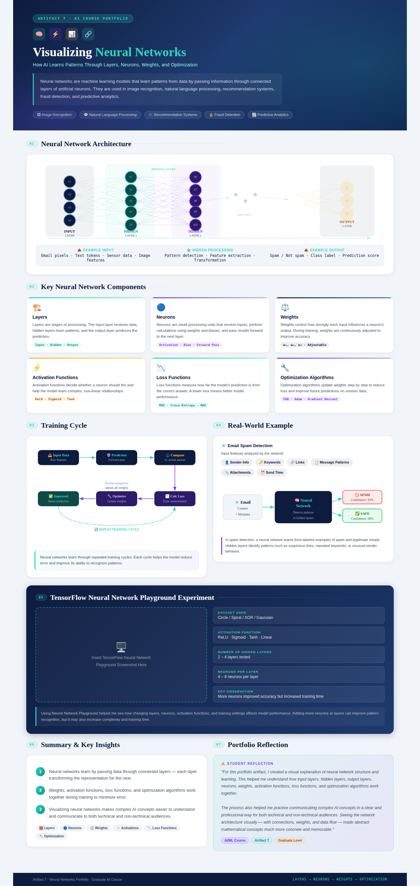

Artifact 7 - Visualizing Neural Networks
Introduction: This artifact presents a visual explanation of neural networks and how they learn from data. It focuses on the structure of a neural network, the role of its core components, and the training process that helps a model improve its predictions. Neural networks are widely used in modern artificial intelligence for image recognition, natural language processing, recommendation systems, fraud detection, predictive analytics, and classification tasks.
Objective
- Define and describe the key components of a neural network.
- Illustrate how data flows from the input layer through hidden layers to the output layer.
- Explain how neurons, weights, activation functions, loss functions, and optimization algorithms work together during learning.
- Connect neural network structure to a real-world example such as email spam detection.
- Create a professional visual artifact that communicates complex AI concepts clearly for technical and non-technical audiences.
Artifact Visual Framework
The infographic below explains neural networks using a structured visual framework. It includes a neural network architecture diagram, component explanation cards, a training cycle flowchart, a real-world spam detection example, and a TensorFlow Neural Network Playground experiment section. The purpose of the visual is to simplify how neural networks process data, identify patterns, calculate errors, and improve over repeated training cycles.

Description
A neural network is a machine learning model made up of connected layers of artificial neurons. Data enters through the input layer, moves through one or more hidden layers, and produces a result through the output layer. Each layer transforms the information it receives, allowing the model to identify patterns and relationships that may not be obvious from the raw input data.
This artifact explains neural networks as a complete learning system rather than as separate technical terms. The input layer receives data, hidden layers process and transform that data, and the output layer produces a prediction or classification. During training, the model compares its prediction to the correct answer, calculates error using a loss function, and updates its weights through an optimization algorithm.
Neural Network Components Explained
| Component | Role in a Neural Network | Why It Matters |
|---|---|---|
| Layers | Layers organize neurons into stages of processing. The input layer receives data, hidden layers transform data, and the output layer produces the result. | Layers help the model move from raw data to more meaningful representations. |
| Neurons | Neurons are small processing units that receive inputs, perform calculations, and pass results forward. | They are the basic building blocks that allow the network to process information. |
| Weights | Weights control how strongly one neuron influences another neuron. | Weights allow the model to learn which inputs are more important for making predictions. |
| Activation Functions | Activation functions decide whether a neuron should pass information forward and introduce non-linear behavior. | They help neural networks learn complex patterns that simple linear models cannot capture. |
| Loss Functions | Loss functions measure the difference between the model's prediction and the correct answer. | They provide feedback that shows how much the model needs to improve. |
| Optimization Algorithms | Optimization algorithms update weights step by step to reduce loss. | They help the model improve over time by learning from mistakes. |
How the Learning Process Works
The learning process begins when the network receives input data. The data is passed through connected neurons, where weights determine how much influence each input has. Activation functions help decide which signals should continue forward. The output layer then produces a prediction, such as a class label, score, or recommendation.
After the prediction is made, the loss function compares the prediction with the correct answer. If the prediction is inaccurate, the optimizer adjusts the weights to reduce future error. This process repeats many times during training. Over time, the neural network becomes better at recognizing patterns and producing accurate outputs.
Real-World Application: Email Spam Detection
The artifact uses email spam detection as a practical example of how neural networks work. In this example, the input layer receives features such as sender information, keywords, links, attachments, and message patterns. Hidden layers analyze these features and identify suspicious combinations, such as repeated promotional language, unusual links, or sender behavior that resembles known spam messages.
The output layer produces a classification such as spam or safe. This example shows how neural networks can support decision-making by learning from previous examples and applying that learning to new data.
TensorFlow Neural Network Playground Exploration
As part of the artifact development process, I explored the TensorFlow Neural Network Playground to observe how model design choices affect learning. The playground helped demonstrate how changes in dataset type, noise level, activation function, number of layers, and number of neurons can influence training time and prediction quality.
The exploration showed that adding more neurons or layers can help a model learn more complex decision boundaries, but it can also increase complexity. A simple model may train quickly but fail to capture difficult patterns. A more complex model may perform better, but it requires careful adjustment to avoid unnecessary complexity. This helped reinforce the importance of balancing model simplicity, performance, and interpretability.
Process
- Research: Reviewed neural network basics, including layers, neurons, weights, activation functions, loss functions, and optimization algorithms.
- Exploration: Practiced with the TensorFlow Neural Network Playground to observe how model settings affect training behavior.
- Design: Created a visual framework that organizes neural network structure, learning flow, and real-world application in one artifact.
- Simplification: Translated technical concepts into concise explanations suitable for students, instructors, and future employers.
- Review: Checked the artifact for clarity, readability, visual balance, and alignment with the assignment requirements.
Tools and Technologies Used
- GitHub Pages for portfolio publishing and documentation.
- HTML and CSS for webpage structure and formatting.
- TensorFlow Neural Network Playground for interactive model exploration.
- Canva, PowerPoint, or AI-assisted design tools for infographic creation and visual organization.
- Generative AI tools for brainstorming, outlining, and improving structure.
Value Proposition
This artifact demonstrates my ability to simplify a complex artificial intelligence concept into a professional visual explanation. It shows that I can explain neural network architecture, connect technical components to the learning process, and communicate AI concepts in a way that supports understanding for both technical and non-technical audiences.
Unique Value
My unique value is connecting AI and machine learning concepts with clear communication, visual design, and practical business understanding. This artifact reflects my ability to translate abstract model concepts into a structured visual reference that can help learners, stakeholders, and project teams understand how neural networks support intelligent decision-making.
Relevance
This artifact is relevant for roles in data analytics, machine learning, artificial intelligence, business intelligence, and AI solution development. In real-world projects, explaining how a model works is often just as important as building the model itself. This artifact supports that need by making neural network structure and learning behavior easier to understand and discuss.
References
- TensorFlow. (n.d.). Neural Network Playground. https://playground.tensorflow.org/
- Google. (n.d.). Machine Learning Crash Course: Neural networks. https://developers.google.com/machine-learning/crash-course
- IBM. (n.d.). What are neural networks? https://www.ibm.com/topics/neural-networks